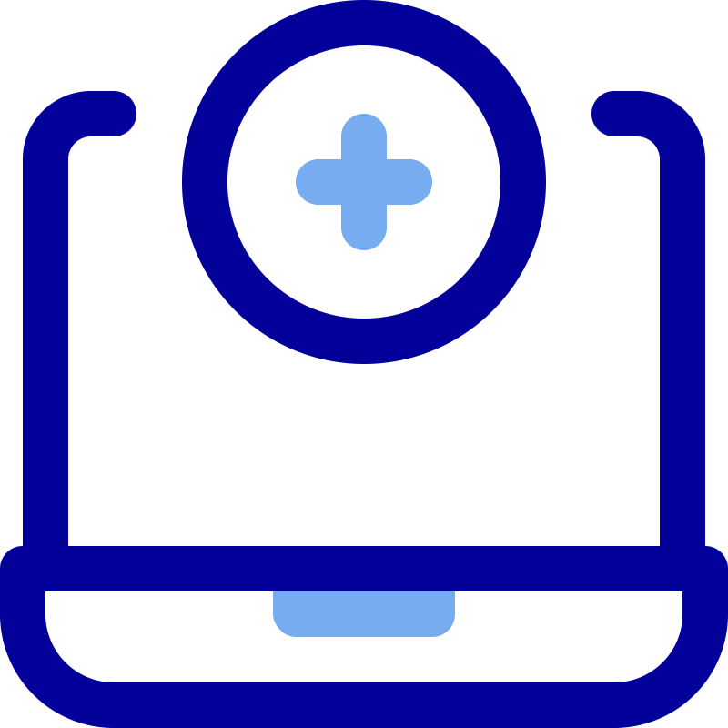

<mat-sidenav-container class="sidenav-container">
  <mat-sidenav #drawer class="sidenav" fixedInViewport [attr.role]="(isHandset$ | async) ? 'dialog' : 'navigation'"
    [mode]="(isHandset$ | async) ? 'over' : 'side'" [opened]="(isHandset$ | async) === false">
    <mat-toolbar>Menu DE TICKETS</mat-toolbar>
    <mat-nav-list>
      <a mat-list-item routerLink="clientes">
        
        Clientes</a>
      <a mat-list-item routerLink="servicios">
        
        Consultas</a>
      <a mat-list-item routerLink="hoteles">
        
        Ventanillas</a>
      <a mat-list-item routerLink="usuarios">
        
        Usuarios</a>
      <a mat-list-item routerLink="habitaciones">
        
        Tickets</a>
      <a mat-list-item routerLink="reportes">
        
        Reportes</a>

    </mat-nav-list>
  </mat-sidenav>
  <mat-sidenav-content>
    <mat-toolbar class="mat-color">
      <button type="button" aria-label="Toggle sidenav" mat-icon-button (click)="drawer.toggle()"
        *ngIf="isHandset$ | async">
        <mat-icon aria-label="Side nav toggle icon">Menu</mat-icon>
      </button>
      <span>CLINICA | UNIVERSIDAD MARIANO GALVEZ</span>
      <span class="spacer"></span>
      <button mat-button class="logout-button" (click)="salir()">Cerrar sesión</button>
    </mat-toolbar>
    <!-- Add Content Here -->
    <router-outlet></router-outlet>
  </mat-sidenav-content>
</mat-sidenav-container>